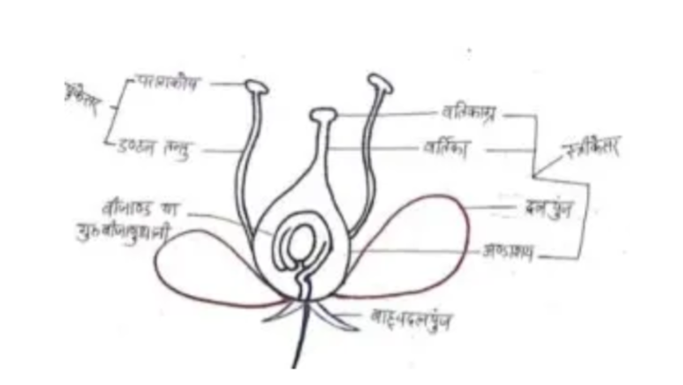
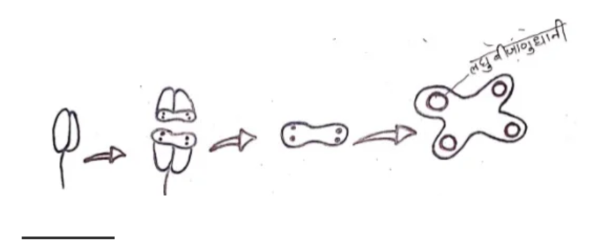
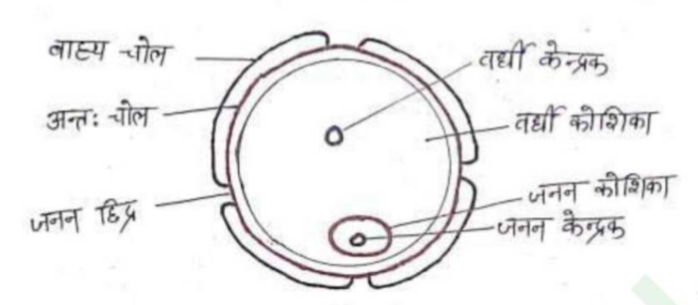
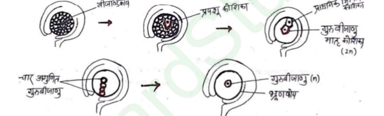
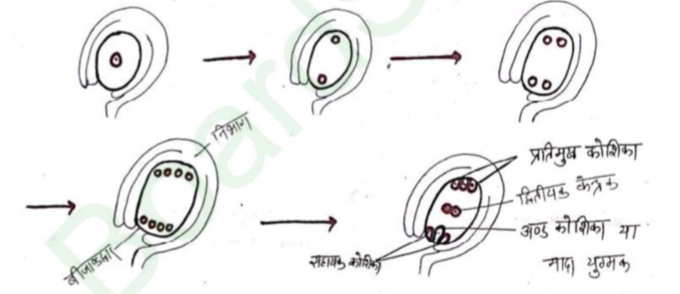
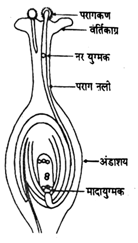

प्रारूपिक पुष्प में चार प्रमुख मंडल होते हैं –
- दलपुंज – यह पुष्प की सबसे बाहरी चक्र है, हरे रंग की होती है और पुष्प को कली अवस्था में सुरक्षा देती है।
- पंखुड़ी पुंज – रंगीन और आकर्षक होती हैं, परागण में सहायक।
- पुंकेसर – नर जननांग, इसमें परागकोष और तंतु होते हैं।
- अंडप – मादा जननांग, इसमें अंडाशय, वर्तिकाग्र और वर्तिकाएँ होती हैं।

- पुंकेसर में परागकण बनते हैं और अंडाशय में अंडाणु बनता है।
- परागण के समय परागकण वर्तिकाग्र पर पहुँचते हैं।
- परागकण से परागनलिका बनती है, जो अंडाणु तक पहुँचती है।
- एक नर युग्मक अंडाणु से मिलकर निषेचन करता है।
- दूसरा नर युग्मक केंद्रीय कोशिका से मिलकर एंडोस्पर्म बनाता है।
- इस प्रकार आवृत्तबीजियों में द्विगुणित निषेचन द्वारा लैंगिक जनन होता है।
उत्तर - ऐसे पुष्प जिनमें या तो केलव पुंकेसर या केवल स्त्रीकेसर उपस्थित होते हैं, एकलिंगी पुष्प कहलाते हैं।
उत्तर - जिन पुष्पों में पुंकेसर तथा स्त्रीकेसर दोनों ही होते हैं, वे द्विलिंगी पुष्प कहलाते हैं।
उत्तर -
- नर जननांग - पुंकेसर
- मादा जननांग - स्त्रीकेसर
नर युग्मोदभीद - आवृत्तबीजी पौधों में परागकण को नर युग्मकोद्भिद कहते हैं।
इससे दो नर युग्मक उत्पन्न होते है।
मादा युग्मोदभीद - आवृत्तबीजी पौधों में भ्रूणकोष को मादा युग्मकोद्भिद कहते हैं।
इससे एक मादा युग्मक (अंड कोशिका) उत्पन्न होती है।
नर युग्मोदभीद (परागकण) का विकास पुंकेसर के परागकोष में होता है।
मादा युग्मोदभीद (भ्रूणकोष) का विकास अण्डाशय में स्थित बीजाण्ड के मे होता है।
पुंमंग पुष्प का नर जननांग है।
इसके दो प्रमुख भाग होते हैं।
- तंतु – पतला डंठल जो परागकोष को सहारा देता है।
- परागकोष – तंतु के शीर्ष पर स्थित, द्विखंडी संरचना, जिसमें परागकण बनते हैं।

नर पुष्प का वह भाग जो परागकण उत्पन्न करता है, उसे परागकोष कहते हैं।
उदाहरण —गेहूँ, मटर, कपास आदि के पुष्पों में परागकोष पाए जाते हैं।
संरचना

परागकोष एक द्विखंडी संरचना है, प्रत्येक खंड में दो दो अर्थात कुल चार परागकोषिकाएँ पाई जाती हैं।
- उपत्वचा
- अंतत्वचा
- मध्य परतें
- अंतस्त्वचा / टैपेटम

टैपेटम परागकोष की सबसे अंदरूनी परत है। यह कोशिकाएँ घनी, बहु-नाभिकीय और पोषणयुक्त होती हैं।
भूमिका:
- परागकणों को पोषण देती है।
- परागकण की भित्ति के निर्माण हेतु आवश्यक एंजाइम और पदार्थ उपलब्ध कराती है।
- स्पोरोपोलिनिन का निर्माण कर बाह्य परत को सुदृढ़ बनाती है।
लघुबीजाणु जनन वह प्रक्रिया है, जिसमें परागकोष के भीतर स्थित लघुबीजाणु जनक कोशिकाएँ अर्धसूत्री विभाजन द्वारा लघुबीजाणु बनाती हैं।
प्रक्रिया -
- परागकोष के भीतर लघुबीजाणु जनक कोशिकाएँ पाई जाती हैं।
- प्रत्येक जनक कोशिका में अर्धसूत्री विभाजन होता है।
- इससे चार लघुबीजाणु बनते हैं, जिन्हें चतुष्क कहते हैं।
परागकोष का स्फूटन वह प्रक्रिया है, जिसमें परागकोष परिपक्व होने पर फट जाता है और उसके अंदर बने परागकण बाहर निकल आते हैं।

क्रियाशील लघुबीजाणु परागकण (नर युग्मकोद्भिद) की प्राथमिक कोशिका होती है।
परागकण एक अगुणित कोशिका होती है, इसमें दो भित्तियाँ पाई जाती है।
- बाह्य चोल- बाह्य चोल एक अत्यधिक प्रतिरोधक वसीय पदार्थ स्पोरोपालेनिन से मिलकर बना होता है। स्पोरोपालेनिन पर किसी भी ताप, अम्ल, क्षार आदि का प्रभाव नहीं पड़ता। यही कारण है कि परागकणों का जैविक अपघटन नहीं होता।
- अन्तः चोल- अन्तः चोल पेक्टोसेलुलोज से मिलकर बनी होती है। अन्तः चोल से ही परागनलिका का निर्माण होता है।

स्त्री केशर पुष्प का मादा जननांग है।
स्त्रीकेशर के तीन प्रमुख भाग होते हैं—
- वर्तिकाग्र - यह स्त्रीकेशर का ऊपरी भाग होता है। यह चिपचिपा होता है और परागकण को ग्रहण करता है।
- वर्तिका - यह एक पतली नलीनुमा संरचना होती है। यह वर्तिकाग्र को अंडाशय से जोड़ती है।
- अंडाशय - यह स्त्रीकेशर का निचला फूला हुआ भाग होता है। इसमें बीजाण्ड (Ovules) पाए जाते हैं।
यह पुष्प के अंडाशय के अंदर स्थित एक बीज के आकार की संरचना होती है जिसके अंदर गुरुबीजाणु बनते हैं।
बीजाण्ड -

प्रत्येक बीजाण्ड एक पतली संरचना द्वारा अण्डाशय से जुडा होता है जिसे बीजाण्डवृन्त (Funicle) कहते हैं।
बीजाण्ड एक या दो आवरणों द्वारा घिरा होता है बाहरी आवरण को बाह्य अध्यावरण तथा आन्तरिक आवरण को अन्तः अध्यावरण कहते हैं।
अध्यावरण बीजाण्ड के एक स्थान पर अपूर्ण होता होता है, बीजाण्डद्वार कहते है।
बीजाण्ड का वह भाग जहाँ से अध्यावरण निकलता है, निभाग (Chalaza) कहलाता है। जो हमेशा बीजाण्डद्वार के विपरीत दिशा में होता है।
बीजाण्ड के अन्दर मृदू तक कोशिकाओं का समूह होता है, जिसे बीजाण्डकाय कहते हैं।
बीजाण्डकाय के मध्य में एक थैली नुमा संरचना होती हैं, जिसे भ्रूणकोष कहते हैं।
गुरुबीजाणुजनन वह प्रक्रिया है, जिसमें अंडाशय के भीतर स्थित गुरुबीजाणु जनक कोशिकाएँ अर्धसूत्री विभाजन द्वारा गुरुबीजाणु बनाती हैं।
प्रक्रिया -
बीजाण्ड काय में उपस्थित मृदूतक कोशिकाओं में से एक अर्धस्तरीय कोशिका आकार में बड़ी हो जाती है इसका कोशिकाद्रव्य गाढा तथा केन्द्रक बड़ा हो जाता है। इसे प्रपशू कोशिका कहते हैं।
प्रपशू कोशिका मे समसूत्री विभाजन होता है, जिससे बाहर की तरफ एक प्राथमिक भित्तिय कोशिका का निर्माण होता है तथा भीतर की तरफ बीजाणुजनन कोशिका का निर्माण होता है।
बीजाणुजनन कोशिका बिना विभाजन किए ही गुरुबीजाणु मातृ कोशिका की तरह कार्य करने लगता है।
गुरुबीजाणुमातृ कोशिका मे अर्द्धसूत्री विभाजन होता है, जिससे चार अगुणित गुरु बीजाणुओ का निर्माण होता है। इनमें से तीन अगुणित गुरुबीजाणु जल्दी ही नष्ट हो जाते हैं।
एक गुरुबीजाणु क्रियाशील होता है, क्रियाशील गुरुबीजाणु ही भ्रूणकोष या मादा युग्मकोद्भिद में परिवर्धित होता है।

क्रियाशील गुरुबीजाणु मादा युग्मकोद्भिद की प्राथमिक कोशिका है।
गुरुबीजाणु वृद्धि कर बीजाण्ड का अधिकांश भाग घेर लेता है।
इसका केन्द्रक समसूत्री विभाजन द्वारा दो केन्द्रक में विभाजित हो जाता है और दोनो केन्द्रक दोनो ध्रुवो पर एकत्रित हो जाते हैं।
पुनः इन केन्द्रको मे समसूत्री विभाजन होता है और दो से चार केन्द्रक बन जाते हैं। पुनः चारो केन्द्रको मे समसूत्री विभाजन होता है और आठ केन्द्रक का निर्माण होता है।
इनमें से ५ केन्द्रक निभाग तथा ५ केन्द्रक बीजाण्डद्वार की ओर स्थित होते हैं।
एक केन्द्रक निभाग की ओर से तथा एक केन्द्रक बीजाण्डद्वार की ओर से मध्य में आकर स्थित हो जाता है, जिसे ध्रुवीय केन्द्रक कहते हैं।
3 केन्द्रक जो निभाग की ओर स्थित होते हैं, कोशिकाद्रव्य का विभाजन करके प्रतिमुख कोशिका कहलाते हैं।
3 केन्द्रक जो बीजाण्डद्वार की ओर स्थित होते हैं कोशिका दुव्य का विभाजन करके मध्य की कोशिका अण्ड कोशिका या मादा युग्मक कहलाती है तथा अगल-बगल की कोशिका सहायक कोशिका कहलाती है।
ध्रुवीय केन्द्रक संयुक्त होकर द्वितीयक केन्द्रक कहलाते हैं।
परिपक्व भूणकोष 7 कोशिकीय व 8 केन्द्रकीय होता है।

उत्तर —बीजाण्डकाय के मध्य में एक थैली नुमा संरचना जिसमे भ्रूण बनता है उसे जिसे भ्रूणकोष कहते हैं।

संरचना - पुष्पी पौधों में परिपक्व मादा युग्मकोद्भिद (भ्रूणकोष) की संरचना 7 कोशिकीय तथा 8 केन्द्रकीय होती है। इसे निम्न प्रकार से समझा जा सकता है—
- बीजाण्डद्वार पर एक अंड कोशिका तथा दो सहाय कोशिकाएँ होती है तथा प्रत्येक में एक-एक केन्द्रक होता है। ये तीनों मिलकर अंड उपकरण बनाती हैं।
- मध्य भाग में एक केन्द्रीय कोशिका, जिसमें दो ध्रुवीय केन्द्रक उपस्थित होते हैं।
- प्रतिमुखी छोर पर तीन प्रतिमुखी कोशिकाएँ होती है तथा प्रत्येक में एक-एक केन्द्रक होता है।
उत्तर —
पुष्पी पौधों के अनिषेचित भ्रूणकोष में निम्नलिखित कोशिकाएँ पाई जाती हैं—
- एक अंड कोशिका
- दो सहाय कोशिकाएँ
- एक केन्द्रीय कोशिका
- तीन प्रतिमुखी कोशिकाएँ
इस प्रकार भ्रूणकोष में कुल 7 कोशिकाएं होती हैं।
परागकणो का परिपक्व परागकोष से निकलकर मादा पुष्प के वतिकाग्र पर पहुंचना परागण कहलाता है।
परागण दो प्रकार का होता है।
- स्व परागण
- पर परागण
जब किसी पुष्प के परागकोष से परागकण निकलकर उसी पुष्प के वतिकाग्र या उसी पाँधे के किसी अन्य पुष्प के वतिकाग्र पर पहुंचते हैं, तो क्रिया को स्व परागण कहते है।
स्व परागण दो प्रकार से होता है:-
- स्वयुग्मन परागणः- जब परागकण किसी पुष्प से निकलकर उसी पुष्प के वतिकाग्र पर पहुंचते हैं, तो इस क्रिया को स्वयुग्मन कहते हैं।
Ex. मटर, टमाटर आदि ।
- सनातपुष्पी परागण : जब किसी पुष्प के परागकण उसी पौधे के किसी अन्य पुष्प के वतिकाग्र पर पहुंचते हैं, तो उसे सजात पुष्पी परागण कहते हैं।
Ex. - मक्का ।
स्व परागण के लाभः
- स्व परागण की प्रक्रिया निश्चित होती है।
- स्व. परागण से उत्पन्न बीज शुद्ध वंश क्रम वाले होते हैं।
स्व परागण की हानियाँ :
- स्व परागण से उत्पन्न पौधे मे विभिन्नताएँ नहीं आती है।
- स्व परागण से उत्पन्न पौधे मे रोग प्रतिरोधक क्षमता कम पाई जाती है।
उत्तर पुष्पों द्वारा स्वपरागण रोकने के लिए विकसित की गई दो कार्यनीति निम्न है।
- एकलिंगता - इसमें नर तथा मादा पुष्प अलग-अलग पौधों पर लगते हैं।
उदाहरण पपीता, खजूर।
- भिन्न कालपक्वता - इसमें पुष्प के नर तथा मादा जननांग अलग-अलग समय पर परिपक्व होते हैं, जिसके कारण उनमें स्वपरागण नहीं होता।
उदाहरण लीरोडेन्ड्रोन, पेण्टेगो।
इस क्रिया में एक पुष्प के परागकण उसी जाति के अन्य पौधो के पुष्प के वतिकाग्र पर पहुंचते हैं, इस क्रिया को पर परागण कहते हैं।
पर परागण के लाभः-
- पर परागण द्वारा उत्पन्न बीज बड़े, स्वस्थ व अच्छी नस्ल वाले होते हैं।
- पर परागण से बनने वाले फल बडे व स्वादिष्ट होते हैं।
पर परागण से हानियाँ:-
- अधिक परागकणो का व्यर्थ हो जाना ।
- इसमे सदैव साधन की आवश्यकता होती है।
पर परागण की विधियाँ लिखिए।
परागकणों को वतिकाग्र पर पहुंचने के लिए साधन या माध्यम की आवश्यकता होती है, इन साधनों को कर्मक कहते हैं।
ये कर्मक मुख्यता पाँच प्रकार के हो सकते हैं।-
- जल द्वारा परागणः- जब परागण की क्रिया जल के माध्यम से होती है, तो उसे जल द्वारा परागण कहते हैं।
Ex. वैलिसनेरिया ।
- वायु द्वारा परागणः- जब परागण की क्रिया वायु के माध्यम से होती है, तो उसे वायु द्वारा परागण कहते हैं।
Ex. - मक्का, गेहूँ आदि ।
- कीट द्वारा परागणः- जब परागण की क्रिया कीट द्वारा होती है, तो उसे कीट परागण कहते हैं।
Ex. मधुमक्खी, तितली आदि।
- पक्षी द्वारा परागणः- जब परागण की क्रिया पक्षी द्वारा होती है, तो उसे पक्षी परागण कहते हैं।
Ex- बिगोनिया।
- चमगादड द्वारा परागणः- जब परागण की क्रिया चमगादड द्वारा होती है तो उसे चमगादड द्वारा परागण कहते हैं।
(2021)
जिन पुष्पों की कलियाँ खिलकर खुल जाती हैं, उन्हें उन्मील परागणी पुष्प कहते हैं।
इनमें स्वपरागण तथा परपरागण दोनों संभव हैं।
उदाहरण : मटर, सरसों, सूर्यमुखी
(म. प्र. 2022 )
जिन पुष्पों की कलियाँ कभी नहीं खुलतीं और बंद अवस्था में ही परागण हो जाता है, उन्हें अनुन्मील्य परागणी पुष्प कहते हैं।
इनमें केवल स्वपरागण ही होता है।
परपरागण संभव नहीं होता।
उदाहरण : वायोला, कोमेलीना, ऑक्सालिस
नहीं, अनुन्मील्य परागणी पुष्पों में परपरागण नहीं होता, केवल स्वपरागण ही होता है।
मनुष्य द्वारा दो भिन्न-भिन्न पौधों के वांछनीय (श्रेष्ठ) लक्षणों को एक ही पौधे में प्राप्त करने के लिए नियंत्रित रूप से कराए गए परागण की प्रक्रिया को कृत्रिम संकरण कहते हैं तथा प्राप्त पौधो को उन्हें संकर पौधे कहते हैं।
कृत्रिम संकरण के दो आवश्यक चरण होते हैं—
- विपुंसन (Emasculation)
- थैलीकरण (Bagging)
उत्तर:
द्विलिंगी पुष्प में कली अवस्था के समय चिमटी या कैंची की सहायता से पुंकेसर (परागकोश) को निकाल देने की प्रक्रिया को विपुंसन कहते हैं। इससे उस पुष्प में स्वपरागण नहीं हो पाता।
पादप प्रजनक, द्विलिंगी पुष्पधारी पौधे को मादा जनक के रूप में तकनीक का प्रयोग करते हैं।
विपुंसन प्रक्रिया केवल द्विलिंगी पुष्पों में की जाती है, ताकि स्वपरागण न हो सके।
कृत्रिम संकरण के दौरान विपुंसन किए गए फूल (या मादा पुष्प) को कागज़, बटर पेपर या पॉलीथीन की थैली से ढकने की प्रक्रिया को बेगिंग या थैलीकरण कहते हैं।
इसका मुख्य उद्देश्य फूल को अनचाहे बाहरी परागकणों से सुरक्षित रखना होता है।
नर युग्मक और मादा युग्मक के संयोग की प्रक्रिया को निषेचन कहते हैं।
पुष्पी पौधों में आंतरिक निषेचन होता है।
अथवा
पुष्प की लम्बवत् काट द्वारा निषेचन क्रिया को समझाइए। (म. प्र. 2018)

निषेचन क्रिया -
- जब परागकण संगत पुष्प के वर्तिकाग्र पर पहुँचता है, तो वह अंकुरित होकर परागनलिका बनाता है।
- यह परागनलिका वर्तिका से होते हुए बीजाण्ड में प्रवेश करती है।
- परागनलिका में उपस्थित जनन कोशिका विभाजित होकर दो नर युग्मक बनाती है।
- पहला नर युग्मक अंड कोशिका से संलयित होकर युग्मनज (Zygote) का निर्माण करता है जो विकसित होकर भ्रूण बन जाता है।
- दूसरा नर युग्मक बीजाण्ड में उपस्थित दो ध्रुवीय केंद्रकों से संलयित होकर त्रिगुणित भ्रूणपोष का निर्माण करता है।
पुष्पी पौधों में निषेचन के बाद त्रि-संलयन की प्रक्रिया से बनने वाली त्रिगुणित कोशिका, जो विकसित हो रहे भ्रूण को भोजन प्रदान करती है, उसे भ्रूणपोष (Endosperm) कहते हैं।
- कोशिकीय भूषपोष
- केन्द्रकीय भ्रूणपोष
- हेलोबियल भ्रूणपोष
कार्य - भ्रूणपोष का प्रमुख कार्य भ्रूण को पोषण प्रदान करना है।
परागनलिका मुख्यता तीन स्थानों से बीजाण्ड या भ्रूणकोष में प्रवेश कर सकती है:-
- निभाग द्वारा परागनलिका का प्रवेश
- अध्यावरण द्वारा परागनलिका का प्रवेश
- बीजाण्डद्वार द्वारा परागनलिका का प्रवेश
पुष्पी पौधों में निषेचन के समय परागनलिका में उपस्थित जनन कोशिका विभाजित होकर दो नर युग्मक बनाती है।
पहला नर युग्मक अंड कोशिका से संलयित होकर युग्मनज (Zygote) का निर्माण करता है, तब इस प्रक्रिया को सत्य निषेचन कहते हैं।
उत्तर
पुष्पी पौधों में निषेचन के समय परागनलिका में उपस्थित जनन कोशिका विभाजित होकर दो नर युग्मक बनाती है।
दूसरा नर युग्मक बीजाण्ड में उपस्थित दो ध्रुवीय केंद्रकों से संलयित होकर त्रिगुणित भ्रूणपोष का निर्माण करता है, तब इस प्रक्रिया को त्रि-संलयन कहते हैं।
त्रि-संलयन बीजाण्ड के भ्रूणकोष (Embryo sac) में होता है।
त्रि-संलयन में सम्मिलित नाभिकों के नाम:
- एक नर युग्मक नाभिक
- पहला ध्रुवीय नाभिक
- दूसरा ध्रुवीय नाभिक
उत्तर
परागनलिका में उपस्थित जनन कोशिका विभाजित होकर दो नर युग्मक बनाती है।
इनमें से एक नर युग्मक अंड कोशिका से मिलकर युग्मनज बनाता है।
दूसरा नर युग्मक बीजाण्ड में मौजूद दो ध्रुवीय केंद्रकों से मिलकर भ्रूणपोष बनाता है।
एक ही बीजाण्ड में होने वाली इन दो संलयन क्रियाओं को दोहरा निषेचन कहते हैं।
द्वि-निषेचन (दोहरा निषेचन) का महत्त्व –
- दोहरा निषेचन स्वस्थ और जीवनक्षम बीज बनने के लिए आवश्यक है।
- इससे भ्रूणपोष बनता है, जो भ्रूण को भोजन देता है।
- भ्रूणपोष तभी बनता है जब भ्रूण बनता है, इसलिए भोजन की बर्बादी नहीं होती।
- भ्रूणपोष में माता और पिता दोनों के गुण पाए जाते हैं।
निषेचन + त्रिसंलयन = द्विनिषेचन
(म. प्र. 2024)
उत्तर निषेचन के बाद होने वाली तीन प्रमुख घटनाएँ निम्न हैं-
(1) भ्रूण का निर्माण
(2) बीज का निर्माण
(3) फल का निर्माण।
युग्मनज से पूर्ण विकसित भ्रूण बनने की अवस्थाएँ
- निषेचन के बाद बना युग्मनज सबसे पहले अनुप्रस्थ विभाजन करता है। इससे दो कोशिकाएँ बनती हैं—
अग्रस्थ कोशिका (ऊपरी भाग में)
आधारी कोशिका (नीचे बीजाण्डद्वार की ओर)
- आधारी कोशिका बार-बार विभाजित होकर निलंबक बनाती है, जो भ्रूण को पोषण देता है।
- अग्रस्थ कोशिका के विभाजन से भ्रूण का मुख्य भाग बनता है। अग्रस्थ कोशिका से दो भाग बनते हैं—
हाइपोबेसल भाग → मूलांकुर → जड़
एपिबेसल भाग → बीजपत्र और प्राकुर प्राकुर से आगे तना और पत्तियाँ बनती हैं।

(Note) द्विबीजपत्री की तरह ही एक बीलपत्ती पादपों में भी भ्रूण का विकास होता है, परन्तु एकबीजपत्री पादपो में केवल एक बीज पत्री का निर्माण होता है।
बीज वह संरचना है जो निषेचन के बाद बीजाण्ड से बनती है और नए पौधे के विकास में सहायक होती है।
बीज के मुख्य भाग निम्न है।
- बीजावरण – बीज की रक्षा करता है।
- भ्रूण – नए पौधे का प्रारम्भिक रूप।
- भोजन संचय भाग (एंडोस्पर्म या बीजपत्र) – भ्रूण को पोषण देता है।
उत्तर —
पुष्पी पादपों में बीज निर्माण का जैविक महत्व निम्नलिखित है—
- बीज निर्माण के कारण निषेचन के लिए बाह्य जल की आवश्यकता समाप्त हो जाती है, जिससे पौधे स्थल पर आसानी से जीवन व्यतीत कर सकते हैं।
- बीजों का प्रकीर्णन होने से पौधे नए स्थानों (आवासों) तक पहुँच पाते हैं।
- बीज में संचित भोजन अंकुरण के समय नवांकुर को पोषण देता है, जब तक पौधा स्वयं प्रकाश-संश्लेषण द्वारा भोजन बनाना शुरू नहीं कर देता।
उत्तर —
जब बीज अनुकूल परिस्थितियाँ होने पर भी अंकुरण नहीं करता, तो उस अवस्था को प्रसुप्ति कहते हैं।
बीज में प्रसुप्ति होने के मुख्य कारण निम्नलिखित हैं।
- बीज की बाहरी परत कठोर होने के कारण जल और गैस का प्रवेश नहीं हो पाता।
- बीज का भ्रूण पूरी तरह विकसित नहीं होता।
- बीज में ऐसे रसायन मौजूद होते हैं जो अंकुरण को रोकते हैं।
- अत्यधिक गर्मी, ठंड, सूखा या ऑक्सीजन की कमी भी प्रसुप्ति का कारण बन सकती है।
निषेचन के बाद पुष्प का अंडाशय तथा पुष्प के अन्य भाग जैसे पुष्पासन, बाह्यदल आदि विकसित होकर जिस संरचना में परिवर्तित हो जाते है, उसे फल कहते हैं।
जिस फल का विकास केवल पुष्प के अंडाशय से होता है, उसे सत्य फल कहते हैं। इसमें पुष्प के अन्य भाग पुष्पासन, बाह्यदल आदि फल के निर्माण में भाग नहीं लेते।
उदाहरण - आम , टमाटर , मटर
जिस फल का विकास केवल अंडाशय से न होकर पुष्प के अन्य भागों जैसे पुष्पासन, बाह्यदल आदि के साथ मिलकर होता है, उसे आभासी फल कहते हैं।
उदाहरण- सेब (पुष्पासन से) , नाशपाती , स्ट्रॉबेरी
उत्तर —
सेब को आभासी फल इसलिए कहा जाता है क्योंकि इसके निर्माण में अंडाशय के अतिरिक्त पुष्पासन भी भाग लेता है।
सेब में पुष्प का पुष्पासन मांसल होकर फल का प्रमुख खाद्य भाग बनाता है, जबकि अंडाशय से बीज बनते हैं।
वह क्रिया जिसमे बिना निषेचन के ही फल का विकास हो जाता है, अनिषेक जनन या अनिषेक फलन कहलाता है इस प्रकार से बने फल मे बीज नही होता है।
जैसे अंगूर केला आदि ।
जायगोट कई विभाजनो के द्वारा एक से अधिक भ्रूण का निर्माण करते हैं। इसके फलस्वरूप अनेक बीजो का निर्माण होता है जिसे बहुभ्रूणता कहते हैं
जैसे = संतरा, नींबू ।